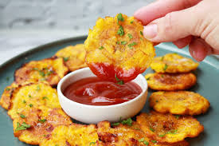

Home
Patacones

Descripción
Esta comida hecha con trozos aplanados del plátano es uno de los platos más tradicionales de América, principalmente de Colombia, Venezuela y Costa Rica
Ingredientes
- 4 plátanos verdes
- Aceite vegetal para freir
- sal al gusto
- Pasta de ajo 20 gramos
Pasos
- Pelar el plátano y cortar media pulgada de cada extremo. Con un cuchillo bien afilado cortar la cáscara a lo largo en tres partes distintas, deslizar la punta del cuchillo o de nuestros dedos debajo de la cáscara y pelarlo, cortar el plátano en 4 partes iguales. Aparte en un tazón mezclar ajo con agua e incorporar los plátanos pelados dentro de la misma.
- Pelar el plátano y cortar media pulgada de cada extremo. Con un cuchillo bien afilado cortar la cáscara a lo largo en tres partes distintas, deslizar la punta del cuchillo o de nuestros dedos debajo de la cáscara y pelarlo, cortar el plátano en 4 partes iguales. Aparte en un tazón mezclar ajo con agua e incorporar los plátanos pelados dentro de la misma.
- Retirarlos del aceite y dejarlos secar en papel absorbente. Con una pataconera envuelta en vinipel o en una bolsa (para que no se peguen) aplastar los plátanos y formar los patacones. Volver a incorporar en el aceite hasta que estén crocantes.
- Servir con hogao, suero costeño o picadillos